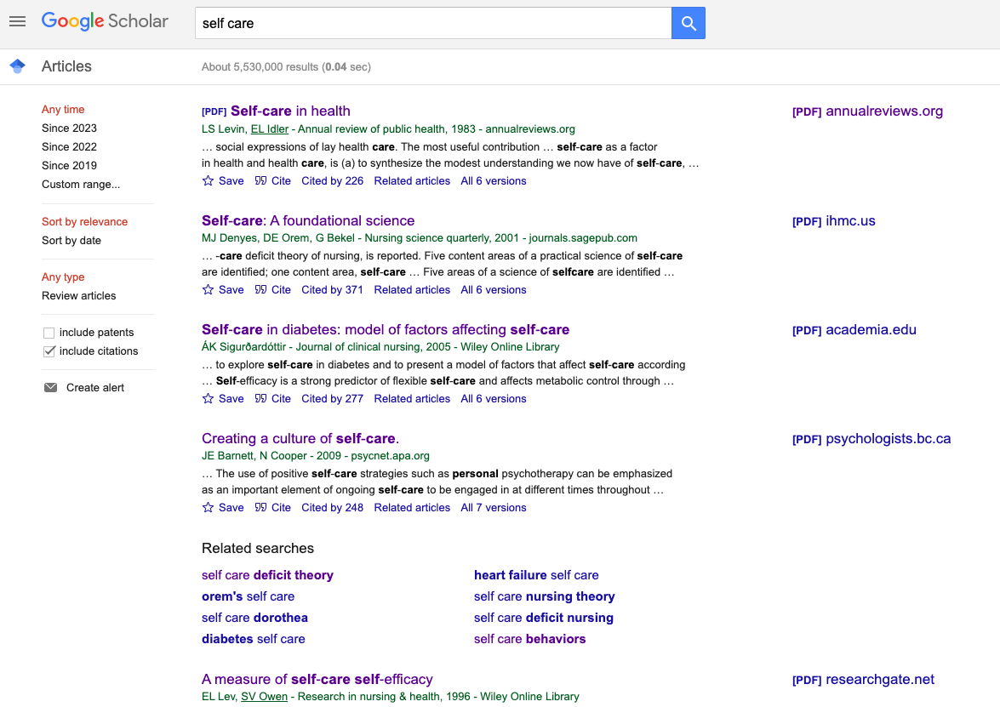
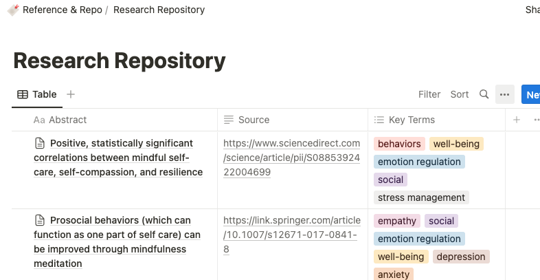
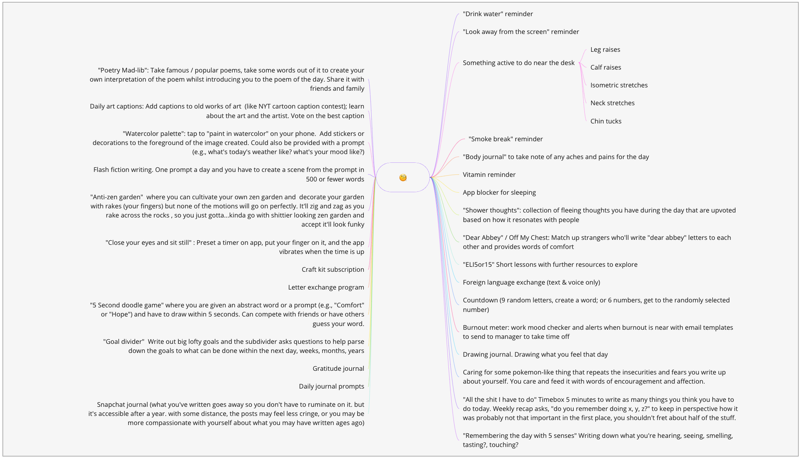
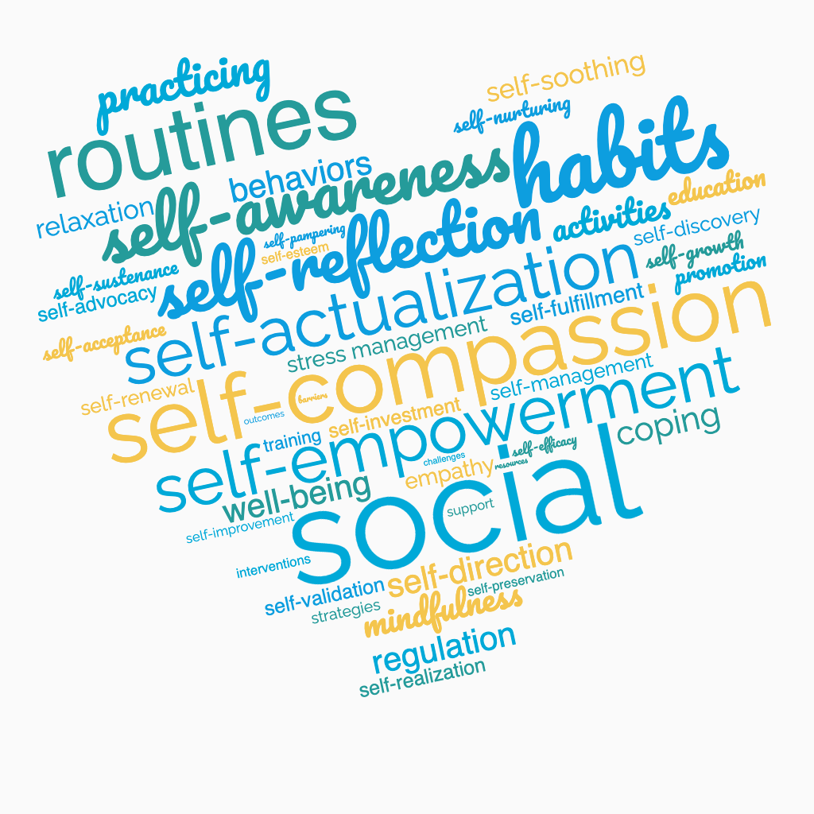
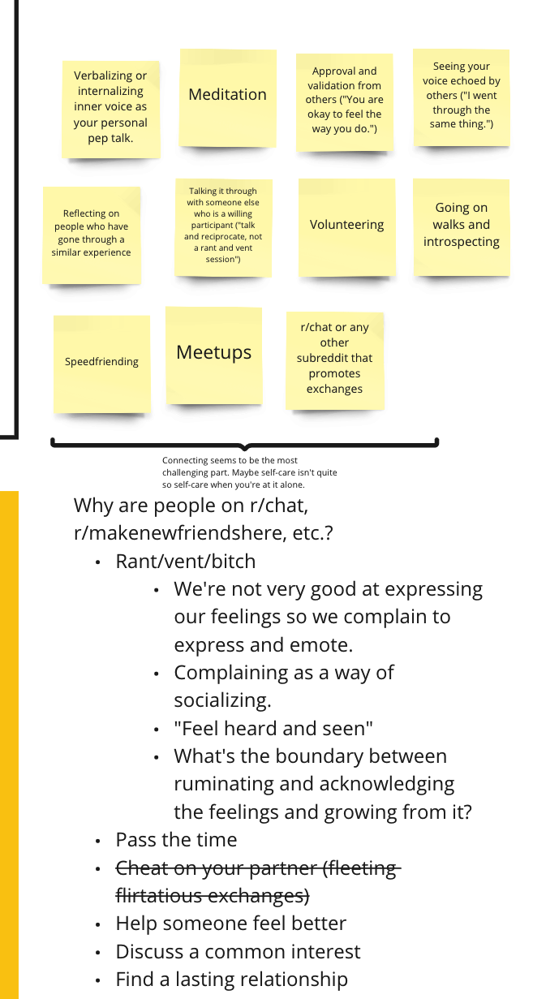

My goal is to help people practice self-care in a meaningful way. However, before diving into product ideas, I needed to address several unknowns and assumptions.
- What exactly is self-care?
- How do people define self-care, both broadly and for themselves?
- Do people explicitly practice self-care?
- Is there a significance in “meaningful” self-care?
- How can we practice self-care meaningfully?
To answer these questions, I sought to understand self-care from other people’s perspectives. I followed four steps: research, define, chat, and refine.
Research
I started out with very simple search terms on Google Scholar to find more comprehensive, specialized information, primary and secondary sources, and related research.

Through this exercise, I discovered many studies completed on self-care. For example, I found a recent study from Journal of Pain and Symptom Management that examined the correlations among self-care, emotion regulation, social support, and well-being among young adults during the COVID pandemic.
The biggest challenge was knowing when to stop this step and move to the next one. To mitigate, I gave myself a maximum of two days to explore and research before moving to the next step.
Define
I identified recurring themes as I read academic journals and books on the topic. To keep track of my findings, I kept a research repository using Notion, where I recorded my takeaways, more details on the findings, and “key terms,” or words that frequently appeared in my readings.

The biggest challenge was avoiding jumping to conclusions too soon. With reputable sources presenting multiple convincing findings, it was all too easy to get sidetracked and end up with numerous product ideas sprouting in every direction like dandelions in springtime.
 My haphazard web of self-care ideas during the process.
In this step, I gathered up my write ups and key terms, noted key observations and reactions, and defined my hypothesis statements. This exercise led me to some unexpected realizations.
- While I expected self-care to be strongly linked to mindfulness, self-reflection, and stress management, I found that routines and habits played a more significant role than I anticipated.
- Contrary to my assumption that self-esteem would play a significant role in self-care, I discovered that self-compassion was a more common theme.
- Social support and prosocial activities also emerged as important means of caring for oneself, which reminded me of the Southern African philosophy of ubuntu: “a person is a person through other persons” or umuntu ngumuntu ngabantu.

With these realizations, I formed several hypotheses and assumptions.
- Practicing routine self-care activities are more impactful than one-off “abortive treatments.”
- When it comes to self-care, people are more attuned to “abortive treatments” to stop feeling bad as negative emotions are happening instead of “routine treatments” to become more resilient.
- Practicing self-compassion is a key component in practicing self-care.
- Practicing care for others can facilitate self-care.
- People want a sense of connection and fulfillment, but they might not perceive this as a form of self-compassion or self-care.
- How someone defines a sense of fulfillment can vary wildly.
- People want to practice self-care. But they don’t know how and are employing different ways to “feel good.”
Chat
After developing initial hypotheses, I sought out people through channels like Meetup, Reddit, Discord, Lunchclub, local networking events, and speed friending events. Before each conversation, I defined 2-3 things I wanted to learn.
I started with these two:
- How do people improve their emotional well-being in their daily lives?
- How do people start and maintain meaningful connections with others?
To prevent myself from making premature assumptions, I made a conscious effort to jot down direct quotes from my conversations with others and organized them on sticky notes in my Miro board. This was much more difficult with in-person conversations. I took multiple pauses to jot down notes during in-person conversations by saying, “Do you mind if I quickly write this down? I want to think more about what you just said,” before rapidly scribbling.
Overall, the “chat” step was the most difficult for me. You need to find an audience. You need to ask the right questions. You need to listen. You need to be open-minded. You need a little chutzpah to approach people and ask them personal questions–which means you need to be vulnerable, too. It would be wildly unfair to go into these conversations as an interrogator.
The least obvious challenge was knowing when I had sufficient enough data to progress to the subsequent stage. To address this, I set up two criteria for myself. The first was when I began to hear similar responses from various individuals. The second was speaking with six people. Whichever condition I achieved first was a cue for me to move on. I made six the cutoff because having fewer participants would not offer a wide enough range of perspectives. On the other hand, talking to more people would require a significant investment of effort and time while providing diminishing returns on insights gained.
Refine
During this step, I refined my understanding and hypotheses by gathering takeaways from my conversations with people, just like the “define” step where I gathered takeaways from my readings.
In this initial cycle of research-define-chat-refine, I had conversations with five people and gained valuable insights. These conversations highlighted that people crave “genuine, authentic, and meaningful” connections in their lives, but it’s challenging to find and sustain them.

Using these insights, I was able to discover a problem and validate some of my hypotheses. For example, I started with the hypothesis that “people want a sense of connection and fulfillment, but they might not perceive this as a form of self-compassion or self-care.” This evolved into “Interconnectivity can improve self-compassion, fulfillment, and actualization. But people are afraid and ashamed of connecting and maintaining connection.”
Where am I now?
I established a weekly cadence of research-define-chat-refine, dedicating 1-2 days to each step. I documented my findings on separate Miro boards for each week, resulting in a total of five boards encompassing my problem discovery efforts.
Through this iteration, I identified two key problems to further explore and develop solutions for. The first is how people can find interconnectivity while working a remote job so they don’t feel isolated and lonely. The second is how people can address the fear of rejection and shame often associated with forming and maintaining bonds.
Time to go make another Miro board!